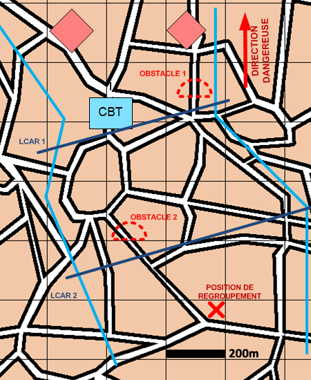

NIVEAU :Automate
ARME :Melee
MISSION :Freiner
Objectif principal
- Détruire / Neutraliser
Modalités d'exécution
-
Installation du dispositif :
- L'échelon d'éclairage va se positionner à l'avant du dispositif ;
- Le PC se poste à la position de regroupement ;
- Le GEN valorise les LCAR (construction d'obstacles et travaux de protection) ;
- Les unités de mêlée du premier échelon se postent sur la LCAR la plus en avant du fuseau et reçoivent la mission "Freiner" ;
- Les unités de mêlée du second échelon se postent sur la deuxième LCAR la plus en avant du fuseau et reçoivent la mission "Freiner" ;
- Les appuis feu se postent en appui du premier échelon.
-
Au contact de l'ENI, l'échelon d'éclairage jalonne.
-
Lorsque le rapport de force devient défavorable ou sur ordre de conduite "Décrocher", la mêlée décroche vers l'arrière du dispositif et rejoint la prochaine LCAR non occupée, ou la position de regroupement s'il ne reste plus de LCAR dans le fuseau.
Schéma de modélisation

Paramètres obligatoires
Fuseau : Zone de responsabilité.
Direction Dangereuse : Orientation privilégiée des capteurs.
Ligne(s) de Coup D'Arrêt [LCAR] : Ligne à partir de laquelle les unités vont effectuer le coup d'arret.
Position de regroupement : Position à rejoindre en fin de mission.
Paramètres optionnels
Nombre d'echelons (1 par défaut): 1 échelon : adapté aux manoeuvres de l'infanterie , 2 échelons : adapté aux manoeuvres de l'ABC
Obstacles: Obstacles à construire.
Valoriser obstacles: Indique si on valorise les obstacles après construction.